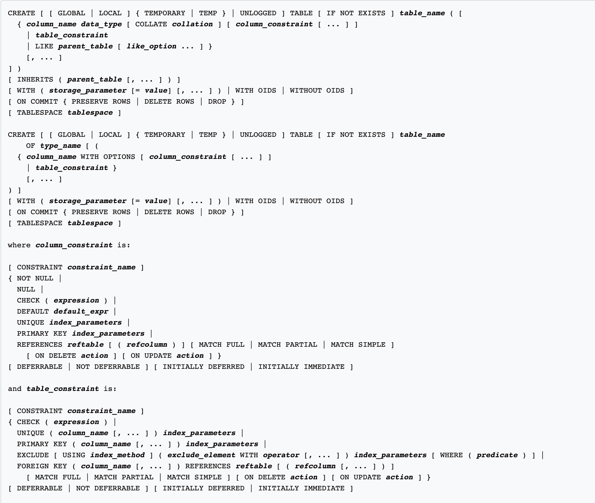

# INFO 610 Fall 2020 <div style="text-align:center;font-size: 1.5;line-height:1.8em;">Week 5</div> --- # Creating Tables Let's create some tables. ```bash postgres=# CREATE TABLE customer ( customer_id SERIAL ); CREATE TABLE postgres=# \dt List of relations Schema | Name | Type | Owner --------+----------+-------+---------- public | customer | table | postgres (1 row) postgres=# SELECT * FROM customer; customer_id ------------- (0 rows) ``` --- # CREATE TABLE ```sql DROP TABLE IF EXISTS agents; CREATE TABLE agents (agent_id int primary key, agent_first_name varchar(255), agent_last_name varchar(255), date_of_hire date, agent_home_phone varchar(255)); ``` * In my scripts, I start with dropping the table so I can run it over and over. * If the table DOESN'T exist 'DROP TABLE agents' would fail. * IF EXISTS protects against that failure * 'agent_id' is an integer, primary key. * These columns use two data types * varchar, date --- # Numeric Data Types <table width="90%"> <tr> <th>Type</th><th>Alias</th><th>Description</th></tr> <tr><td>INT</td><td>INT</td><td>INT</td></tr> <tr><td>bigint</td><td>int8</td><td>signed eight-byre integer</td></tr> <tr><td>double precision</td><td>float8</td><td>double precision floating-point number</td></tr> <tr><td>integer</td><td>int, int4</td><td>signed four-byte integer</td></tr> <tr><td>money</td><td></td><td>currency amount</td></tr> <tr><td>numberic</td><td>decimal [ (p, s) ]</td><td>exact numeric of selectable precision</td></tr> <tr><td>real</td><td>float4</td><td>single precision floating-point number (4 bytes)</td></tr> <tr><td>smallint</td><td>int2</td><td>signed two-byte integer</td></tr> <tr><td>* boolean</td><td>bool</td><td>logical Boolean (true/false)</td></tr> </table> --- # String Data Types <table width="90%"> <tr> <th>Type</th><th>Alias</th><th>Description</th></tr> <tr><td>big</td><td></td><td>fixed-length bit string</td></tr> <tr><td>bit varying</td><td></td><td>variable-length bit string</td></tr> <tr><td>bytea</td><td></td><td>binary data ("byte array")</td></tr> <tr><td>character [ (n) ]</td><td>char [ (n) ]</td><td>fixed-length character string</td></tr> <tr><td>character varying [ (n) ]</td><td>varchar [ (n) ]</td><td>variable-length character string</td></tr> <tr><td>text</td><td></td><td>variable-length character string</td></tr> </table> --- # Time Data Types <table width="90%"> <tr> <th>Type</th><th>Alias</th><th>Description</th></tr> <tr><td>date</td><td></td><td>calendar date (year ,month, day)</td></tr> <tr><td>interval [fields ] [ (p) ]</td><td></td><td>time span</td></tr> <tr><td>time [without time zone]</td><td></td><td>time of day, no time zone</td></tr> <tr><td>time [with time zone]</td><td>timetz</td><td>time of day, including time zone</td></tr> <tr><td>timestamp [without time stamp]</td><td></td><td>date and time (no time zone)</td></tr> <tr><td>timestamp</td><td>timestamptz</td><td>date and time (including time zone)</td></tr> </table> --- # Network Data Types <table width="90%"> <tr> <th>Type</th><th>Alias</th><th>Description</th></tr> <tr><td>cidr</td><td></td><td>IPv4 or IPv6 network address</td></tr> <tr><td>inet</td><td></td><td>IPv4 or IPv6 host address</td></tr> <tr><td>macaddr</td><td></td><td>MAC (Media Access Control) address</td></tr> </table> --- # Geospatial Data Types <table width="90%"> <tr> <th>Type</th><th>Alias</th><th>Description</th></tr> <tr><td>box</td><td></td><td>rectangular box on a plane</td></tr> <tr><td>circle</td><td></td><td>circle on a plane</td></tr> <tr><td>line</td><td></td><td>infinite line on a plane</td></tr> <tr><td>lseg</td><td></td><td>line segment on a plane</td></tr> <tr><td>path</td><td></td><td>geometric path on a plane</td></tr> <tr><td>point</td><td></td><td>geometric point on a plane</td></tr> <tr><td>polygon</td><td></td><td>closed geometric path on a plane</td></tr> </table> --- # Other Data Types <table width="90%"> <tr> <th>Type</th><th>Alias</th><th>Description</th></tr> <tr><td>json</td><td></td><td>textual JSON data</td></tr> <tr><td>jsonb</td><td></td><td>binary JSON data, decomposed</td></tr> <tr><td>pg_lsn</td><td></td><td>PostgrSQL Log Sequence Number</td></tr> <tr><td>tsquery</td><td></td><td>Text search query</td></tr> <tr><td>tsvector</td><td></td><td>text search document</td></tr> <tr><td>txid_snapshot</td><td></td><td>user-level transaction ID snapshot</td></tr> <tr><td>uuid</td><td></td><td>Universally Unique Identifier</td></tr> <tr><td>xml</td><td></td><td>XML data</td></tr> </table> --- # Back to creating tables After going over the list of data types that are built into Postgresql, let's figure out how to use them? * Tracking account balances * Users' last name * Users' age * Geo-fencing * Ankle bracelet * Network monitoring When would you use a: * UUID * json * xml --- # Create table options  --- # Constraints ``` where column_constraint is: [ CONSTRAINT constraint_name ] { NOT NULL | NULL | CHECK ( expression ) | DEFAULT default_expr | UNIQUE index_parameters | PRIMARY KEY index_parameters | REFERENCES reftable [ ( refcolumn ) ] [ MATCH FULL | MATCH PARTIAL | MATCH SIMPLE ] [ ON DELETE action ] [ ON UPDATE action ] } [ DEFERRABLE | NOT DEFERRABLE ] [ INITIALLY DEFERRED | INITIALLY IMMEDIATE ] and table_constraint is: [ CONSTRAINT constraint_name ] { CHECK ( expression ) | UNIQUE ( column_name [, ... ] ) index_parameters | PRIMARY KEY ( column_name [, ... ] ) index_parameters | EXCLUDE [ USING index_method ] ( exclude_element WITH operator [, ... ] ) index_parameters [ WHERE ( predicate ) ] | FOREIGN KEY ( column_name [, ... ] ) REFERENCES reftable [ ( refcolumn [, ... ] ) ] [ MATCH FULL | MATCH PARTIAL | MATCH SIMPLE ] [ ON DELETE action ] [ ON UPDATE action ] } [ DEFERRABLE | NOT DEFERRABLE ] [ INITIALLY DEFERRED | INITIALLY IMMEDIATE ] ``` --- # Named Constraints ```sql CREATE TABLE films ( code char(5), title varchar(40), did integer, date_prod date, kind varchar(10), len interval hour to minute, CONSTRAINT production UNIQUE(date_prod) ); ``` --- # Check Constraint ### Column ```sql CREATE TABLE distributors ( did integer CHECK (did > 100), name varchar(40) ); ``` ### Table ```sql CREATE TABLE distributors ( did integer, name varchar(40), CONSTRAINT con1 CHECK (did > 100 AND name <> '') ); ``` --- # Primary Key ```sql CREATE TABLE films ( code char(5), title varchar(40), did integer, date_prod date, kind varchar(10), len interval hour to minute, CONSTRAINT code_title PRIMARY KEY (code, title) ); ``` --- # Create Mike's Data ```sql DROP TABLE IF EXISTS addresses, customers; ``` ### Address ```sql CREATE TABLE addresses ( id serial PRIMARY KEY, street_one varchar(255), street_two varchar(255), street_three varchar(255), city varchar(255), state varchar(2), zip varchar(10)); ``` ### Customer ```sql CREATE TABLE customers ( id serial primary key, first_name varchar(255), last_name varchar(255), address_id int REFERENCES addresses(id) -- null? ); ``` --- # Homework Due Wednesday, Midnight (9/23/2020) Submit in Canvas SQL file Create tables in one script that can be run over and over: * Addresses (as above) * Customers (as above) * Manufacturer * Distributor * Distributed Items (Join table between distributor and bikes) * Bikes * Inventory * ... and any join tables for many to many relationships No need to worry about accessories or services yet No need to worry about services Only the above tables --- # --- # --- # ---